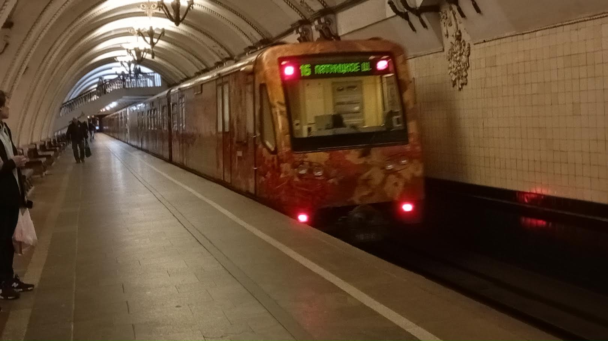

Акварель
«Акварель» — один из самых красивых поездов Московского метро. Это уникальный состав-картинная галерея, созданный совместно с Московской школой акварели. История этого поезда началась с обычного «Русича», который превратился в произведение искусства на рельсах.
Актуально на 2026 год: состав эксплуатируется, но до сих пор носит рекламный бренд «Состав будущего» вместо оригинальной «Акварели». Возвращение легендарного облика задерживается уже более чем на полгода.
Общая информация
Хронология службы
| Город | Депо/Парк | № | С... | По... | Примечание |
|---|---|---|---|---|---|
| 🇷🇺 Москва | ТЧ-3 «Измайлово» | 5078 | 08.08.2025 | «Состав будущего» | |
| ТЧ-16 «Митино» | 10.10.2020 | 08.08.2025 | |||
| ТЧ-16 «Митино» | 24.12.2016 | 10.10.2020 | «Акварель» | ||
| ТЧ-3 «Измайлово» | 06.2007 | 24.12.2016 | |||
| 🇷🇺 Москва | ТЧ-8 «Варшавское» | 0078 | 09.04.2007 | 06.2007 |
| Параметр | Значение |
|---|---|
| Город | Москва 🇷🇺 |
| Депо/Парк | ТЧ-3 «Измайлово» |
| Модель | 81-740.1 «Акварель» |
| Построен | 03.2007 |
| Текущее состояние | Эксплуатируется |
| Назначение | Пассажирский |
| Примечание | «Состав будущего» |
Составность
5078 — 5575 — 5576 — 5577 — 5079
5 вагонов
Тематическое брендирование
С 08.08.2025: «Состав будущего» (актуально на 2026 год)
История
Отправлен с завода
Состав отправлен с завода в метрополитен.
Поступление в метрополитен
Поступил в метрополитен через гейт ТЧ-2 «Сокол».
ТЧ-8 «Варшавское»
Поступил в ТЧ-8 «Варшавское» для наладки, позже поступил в депо приписки ТЧ-3 «Измайлово».
Торжественный запуск
Торжественный запуск на станции «Партизанская».
Ночной концерт
Участвовал в ночном концерте «Музыка 30-х годов, времени открытия Московского метрополитена» оркестра Kremlin на станции «Кропоткинская».
Ночной концерт
Участвовал в ночном концерте «Музыкальное путешествие» оркестра Kremlin на станции «Кропоткинская».
Смена внешнего оформления
Обновлено внешнее оформление состава.
Ночной концерт
Участвовал в ночном концерте на станции «Деловой центр» (СолЛ).
Парад поездов
Участвовал в Параде поездов на Кольцевой линии.
Ночная экскурсия
Участвовал в ночной экскурсии по первой очереди метрополитена.
Переклейка под «Состав будущего»
После капитального ремонта состав переклеили под рекламный бренд «Состав будущего» от ДепТранса.
😔 Картинная галерея была заменена рекламой.
Возвращение оригинального облика
Изначально обещали вернуть оригинальный облик «Акварели» в декабре 2026 года.
⚠️ Просрочка: На текущий момент (2026 год) состав всё ещё носит бренд «Состав будущего». Возвращение оригинального облика задерживается уже более чем на полгода.
Особенности поезда
🚆 Конструкция
- Первый состав серии 81-740.1/741.1 с наружной световой сигнализацией закрытия дверей
- Отсутствует часть окон и сидений по бортам (на их месте размещены картины)
🎨 Оформление
- Цветы на кузове
- Яркая тематическая плёнка
- У каждого вагона свой рисунок
- Картины в салоне
- Экспозиция менялась
- Проект с Московской школой акварели
⭐ Главная особенность: «Акварель» — это не просто поезд, а передвижная картинная галерея, которая радовала пассажиров более 15 лет.
Экспозиции поезда
За время работы в салоне «Акварели» сменилось множество экспозиций:
| Период | Экспозиция |
|---|---|
| 01.06.2007 — 12.05.2009 | Работы Сергея Андрияки и учеников его школы |
| 13.05.2009 — 11.05.2010 | Работы из коллекции Русского музея |
| 12.05.2010 — 14.05.2011 | Репродукции картин из собрания ГМИИ имени А. С. Пушкина |
| 15.05.2011 — 10.05.2012 | Репродукции картин собрания Вятского художественного музея имени Васнецовых |
| 11.05.2012 — 05.09.2012 | Собрание картин Третьяковской галереи |
| 06.09.2012 — 13.05.2013 | Репродукции экспонатов Музея-панорамы «Бородинская битва» |
| 14.05.2013 — 23.04.2014 | Репродукции картин Рязанского художественного музея имени Пожалостина |
| 24.04.2014 — 28.04.2015 | «Летописи ратной славы» студии военных художников имени М. Б. Грекова |
| 29.04.2015 — 26.10.2015 | «Избранное из коллекции Московского музея современного искусства» |
| 27.10.2015 — 29.05.2016 | Экспозиция к 170-летию Русского географического общества |
| 30.05.2016 — 26.09.2016 | «Мастера Строгановской школы» |
| 27.09.2016 — 26.03.2017 | «Город в живописи» Музея Москвы |
| 27.03.2017 — 29.08.2018 | 50 работ Академии акварели и изящных искусств Сергея Андрияки |
| 30.08.2018 — 19.08.2020 | «Растения Красной книги Москвы» |
| 20.08.2020 — 29.12.2020 | «Союз мечты» |
| 30.12.2020 — 17.01.2024 | Работы из коллекции Дарвиновского музея |
| 18.01.2024 — конец июля 2025 | Картины Сергея Андрияки. Студенческие и дипломные работы выпускников Академии акварели и изящных искусств |
Судьба «Акварели»
Все уже ожидали легендарного возвращения состава после капитального ремонта. Однако состав переклеили под рекламный бренд «Состав будущего» от ДепТранса.
⚠️ Просрочка возврата: Оригинальный облик «Акварели» обещали вернуть в декабре 2026 года. На текущий момент (2026 год) состав всё ещё носит бренд «Состав будущего». Возвращение задерживается уже более чем на полгода.
2007 — 2024
Период как «Акварель»
С 08.08.2025
Бренд «Состав будущего» (эксплуатируется)
Декабрь 2026
Ожидаемое возвращение (просрочено)
Фотогалерея

Первый облик «Акварели» (2007–2013).

Второй облик «Акварели» (с 2013) — разные цветы на каждом вагоне.

«Акварель» на данный момент — рекламный «Состав будущего».
Нажмите на фото для увеличения
«Акварель» — это поезд, который делал пассажиров счастливее. Картины вместо рекламы, цветы вместо серости. Увы, возвращение оригинального облика задерживается уже более чем на полгода. Но мы всё ещё надеемся увидеть «Акварель» на линии в её легендарном виде».